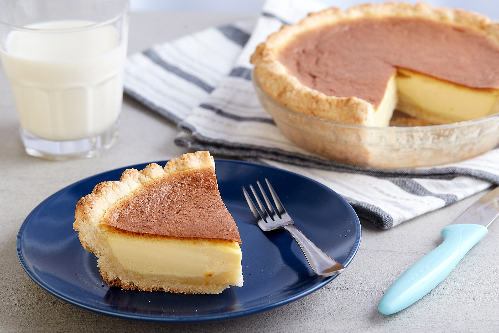

Egg Pie is a sweet Filipino dessert that resembles an egg custard.
Ingredients:
Pie Crust
2 1/2 cups all-purpose flour
1 teaspoon salt
1 cup unsalted butter chilled and cut into cubes
1/4 to 1/2 cup cold water
2 tablespoon granulated sugar
>>Filling
1 3/4 cups evaporated milk
3 pieces raw eggs
1 piece egg white separated from the yolk
1 teaspoon vanilla extract
1 cup granulated sugar
Steps:
- Create the crust by combining the flour, sugar, and salt then mix well.
- Add the butter in the middle and mix using a pastry mixer.
- Gradually pour the cold water while mixing the ingredients. Continue mixing until all the ingredients are well incorporated.
- Gather the dough and mold it into a ball-shaped figure.
- Refrigerate the dough for at least 30 minutes to harden the butter.
- Sprinkle flour on a clean flat surface and flatten the refrigerated dough using a rolling pin. The flattened dough should be wide enough to cover a 9 inch circular baking pan.
- Arrange the flattened dough on top of the baking pan and cut the extra edge using a pair of scissors.
- Refrigerate while doing the filling.
- Start making the filling by scalding the evaporated milk. This is done by heating it in the microwave oven for 2 minutes.
- In a large mixing bowl, combine the 3 raw eggs and the separated egg yolk then whisk.
- Gradually add the granulated sugar while whisking.
- Put-in the vanilla extract then whisk until every ingredient is properly distributed.
- Pour-in the scalded milk then mix thoroughly.
- Beat the separated egg white using an electric mixer until it forms soft peaks.
- Fold the processed egg white in the milk-eggs-sugar mixture.
- Preheat oven to 350 degrees Fahrenheit.
- Pour the filling mixture on the refrigerated pie crust.
- Bake for 15 minutes at 350 degrees Fahrenheit then lower the heat to 325 degrees Fahrenheit and continue baking for 30 to 40 minutes.
- Remove the egg pie from the oven and let cool.
- Serve for dessert. Share and enjoy!